모드는 어떻게 동작하나요
Mods(모드)는 Claude Code 화면을 내가 직접 고칠 수 있게 해 주는 기능이에요. 입력창 위에 원하는 정보를 띄우고, 옆에 작업 패널을 붙이고, 답변 속 이메일을 클릭하기 전까지 가릴 수도 있어요. 공식 기능이라 Claude Code의 원래 화면에 그대로 붙는다는 점이 커요.
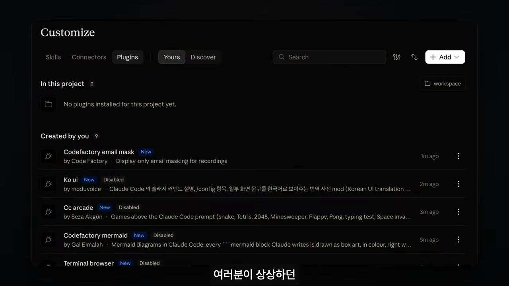
플러그인 하나가 곧 모드예요
모드는 플러그인으로 만들어요. .claude-plugin/plugin.json에 이름과 버전을 적고, hooks/hooks.json에서 실행할 코드 파일 경로를 가리켜요. 실제 기능은 그 코드 파일(hooks/register.js)에 써요.
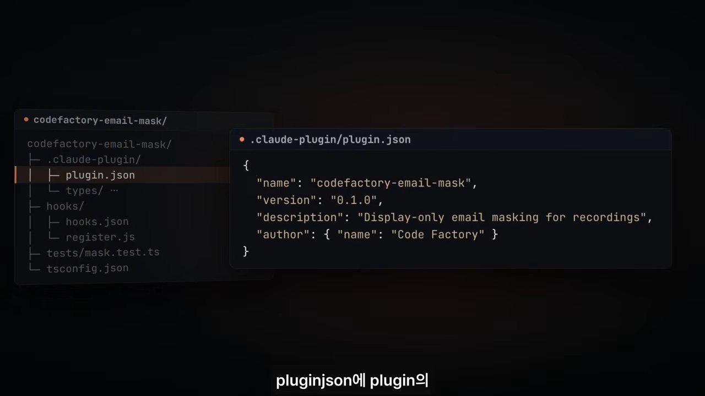
plugin.json에는 이름·버전·설명만 들어가요. 영상 00:56에서 보기이벤트 사이에 끼어드는 미들웨어
Claude Code는 프롬프트를 보낼 때, 도구를 부를 때, 응답을 화면에 그릴 때마다 이벤트를 내요. 모드는 원하는 이벤트에 함수를 등록해 두는 방식이에요. 그러면 Claude Code가 그 작업을 하기 직전에 내 함수를 먼저 불러요.
발표자는 이걸 기존 훅과 비슷하고, 웹 개발의 미들웨어와 같은 구조라고 설명해요. Claude Code가 원래 일을 하기 전에 중간에서 가로채 내용을 확인하거나 바꾸는 거예요.
등록한 함수는 인자 세 개를 받아요.
$: Claude Code 기능 묶음이에요. 패널을 띄우고, 파일을 읽고, 모델을 부를 수 있어요.e: 지금 일어난 이벤트예요. 그릴 응답이나 부를 도구 정보가 들어 있어요.next: 다음 단계로 넘기는 콜백이에요.
next를 어떻게 부르느냐에 따라 결과가 세 갈래로 나뉘어요.
| 함수가 하는 일 | 결과 |
|---|---|
next(e) — 이벤트를 그대로 넘겨요 | 원래 동작이 그대로 유지돼요 |
next({ ...e, props }) — 고친 이벤트를 넘겨요 | 다음 단계가 고친 값을 써요 |
next 없이 값을 바로 반환해요 | 반환한 값이 그대로 출력돼요 |
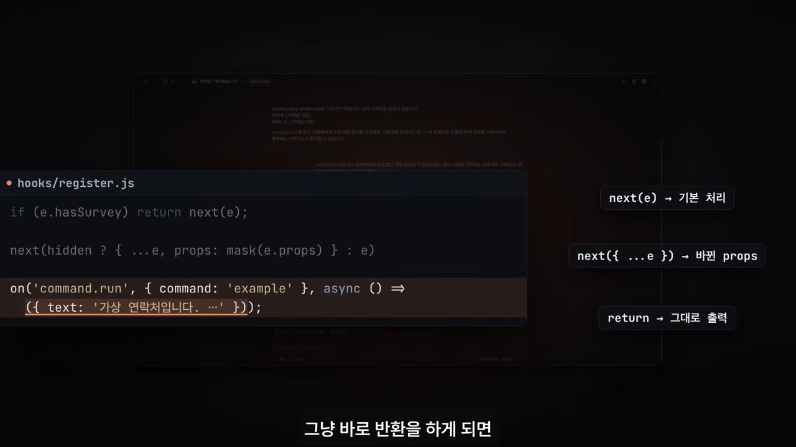
command.run처럼 값을 바로 반환하는 예도 함께 보여요. 영상 02:34에서 보기이메일 가림 모드 뜯어보기
원리를 실제 화면과 맞춰 보는 예제예요. 촬영하거나 화면을 공유할 때, 또는 보안 때문에 응답 속 이메일 주소를 가리고 싶을 수 있어요. 이 모드를 켜면 주소 자리에 [이메일 가림]이 보여요. 입력창 위 표시하기 버튼을 누르면 원래 주소가 나오고, 다시 누르면 가려져요. 이 동작은 클릭 대신 호버로 설계할 수도 있어요.
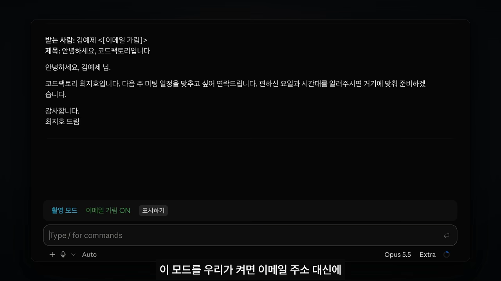
응답을 그릴 때 이메일을 바꿔치기해요
먼저 ui.render 이벤트에 함수를 등록하고, 컴포넌트를 AssistantMessage로 지정해요. 그러면 Claude의 응답을 화면에 그릴 때마다 이 함수가 불려요.
함수는 이벤트의 props에서 그릴 내용을 꺼내요. mask 함수가 정규식으로 이메일을 찾아 [이메일 가림]으로 바꾸고, 바뀐 이벤트를 next에 넘겨요. 가릴지 말지는 hidden 값 하나로 정해요. 켜져 있으면 가리고, 꺼져 있으면 원래 내용을 그대로 넘겨요.
입력창 위에 버튼을 붙여요
사용자가 hidden을 직접 바꾸려면 버튼이 필요해요. 이때 쓰는 자리가 AbovePrompt예요. 이름 그대로 입력창 바로 위에 UI를 그리는 위치예요.
여기에 텍스트와 버튼을 넣고, 버튼의 onPress에서 hidden을 뒤집어요. 그다음 $.ui.invalidate('ui.render')를 불러 화면을 다시 그리게 해요. 버튼 글자도 상태에 따라 표시하기와 다시 가리기로 바뀌어요.
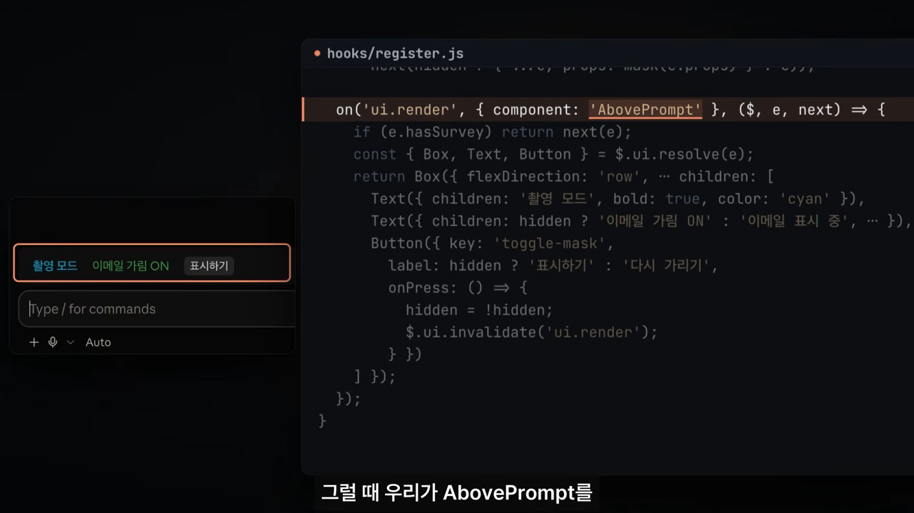
AbovePrompt 코드와 실제로 그려진 버튼 영역을 나란히 보여 줘요. 영상 03:51에서 보기바뀌는 건 화면뿐이에요
여기서 짚고 갈 점이 있어요. 모드는 화면에 그려지는 내용만 바꿔요. 원본 파일에는 실제 주소가 그대로 있고, 모델도 진짜 주소로 메일 초안을 써요. 모드는 그 결과를 화면에 보여 줄 때만 끼어들어요.
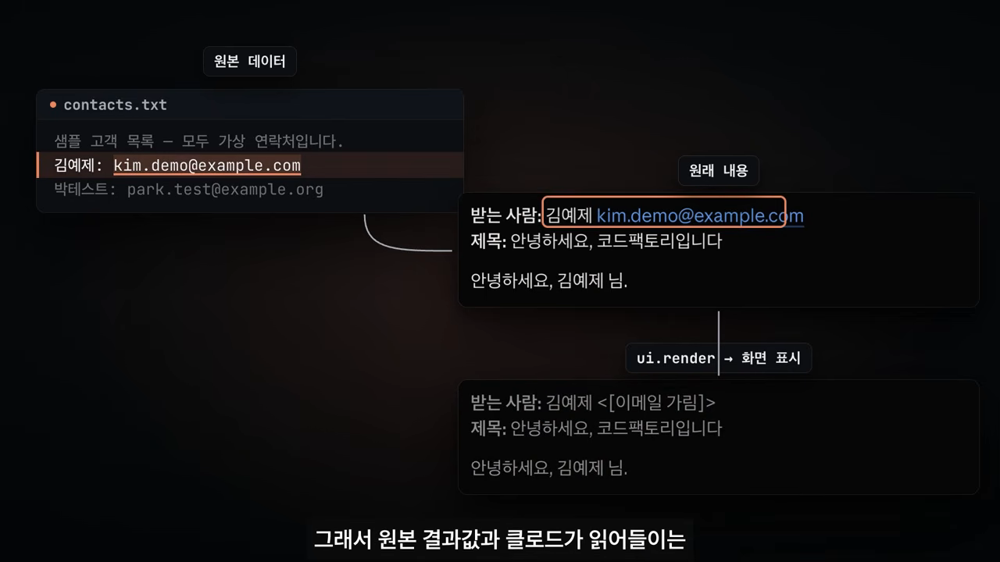
ui.render 단계에서만 주소가 가려져요. 영상 04:31에서 보기그래서 모드를 설계하는 순서는 단순해요. 화면의 어디를 바꿀지 정하고, 그 이벤트에 코드를 붙이고, 클릭하면 상태가 바뀌게 만들면 돼요.
사례 1~5: 작업 흐름을 Claude Code 안으로
여기서부터는 지금 인기 있는 사례 열 가지를 빠르게 훑어요. 앞의 다섯 개는 다른 도구에서 하던 일을 Claude Code 화면 안으로 끌어오는 사례예요.
1. PR 상태
입력창 위에 PR의 리뷰·검사 상태를 띄워요. 코드를 쓰면서 PR에 아직 남은 확인 항목을 같이 볼 수 있어요.
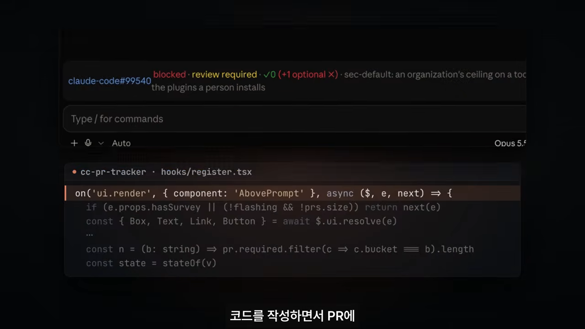
AbovePrompt에 그린 거예요. 영상 05:05에서 보기2. Linear 연결
Claude Code 안에서 Linear 이슈를 검색하고, 고른 이슈를 바로 작업 요청으로 넘겨요. 코드 수정과 테스트가 끝나면 결과를 댓글 초안으로 정리해 올릴 수도 있어요. Linear 말고 다른 이슈 도구도 같은 식으로 붙일 수 있어요.
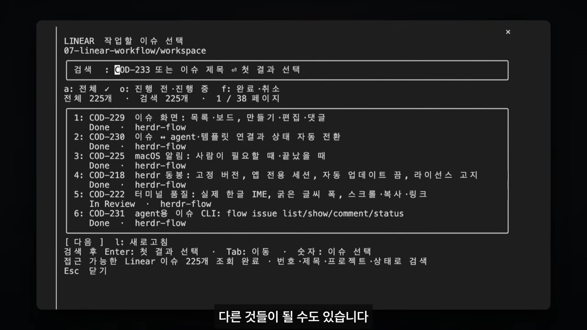
3. 문단 직접 골라 고치기
옆 패널에 문서를 띄우고, 고칠 문단의 연필 버튼을 눌러 어떻게 바꿀지 코멘트를 적게 만들 수 있어요. Claude는 그 코멘트를 맥락 삼아 해당 문단만 고치고, 패널에도 고친 내용이 바로 반영돼요.
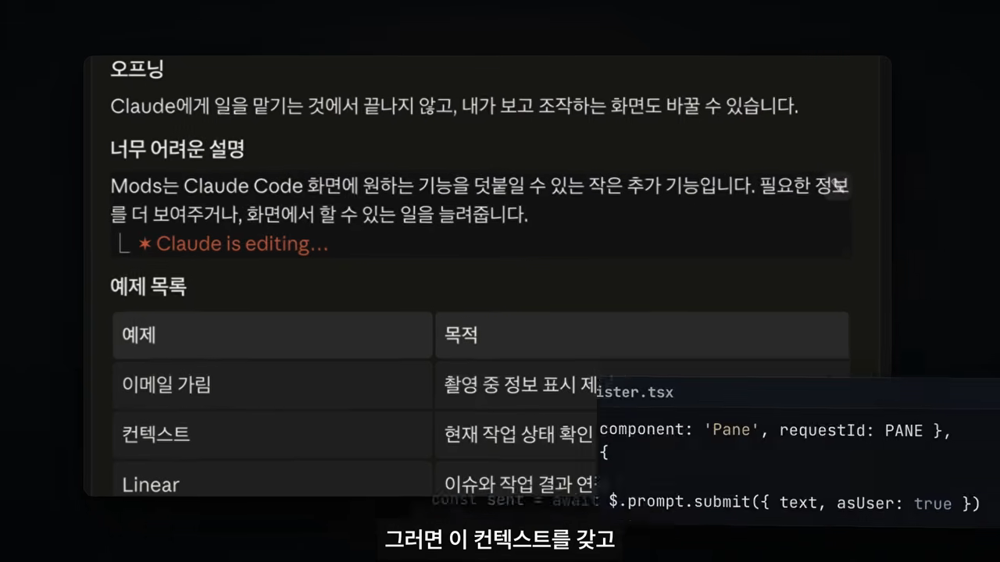
$.prompt.submit으로 Claude에게 전달돼요. 영상 05:37에서 보기4. 브라우저
발표자가 많이 쓴다고 꼽은 기능이에요. 지원하는 터미널에서는 Claude Code 옆에 브라우저를 직접 붙일 수 있어요. 대화와 웹페이지를 한 화면에 두고 일하는 방식이에요.
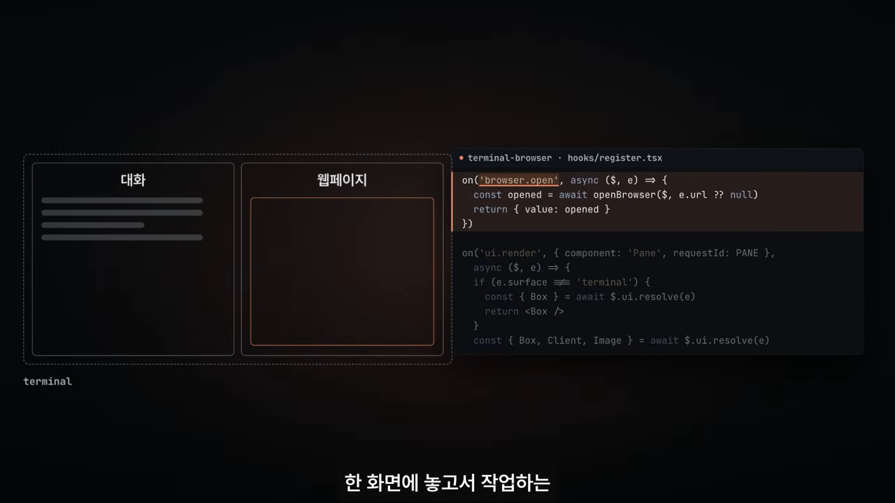
browser.open 이벤트를 받아 패널로 띄워요. 영상 05:53에서 보기5. 다이어그램
Claude가 응답에 Mermaid 코드를 쓰면 원래는 글자로만 보여요. 모드를 쓰면 그 자리에 글자로 그린 도식을 바로 보여 줄 수 있어요. 로그인 분기나 결제 흐름을 볼 때 따로 뷰어를 띄울 필요가 없어져요.
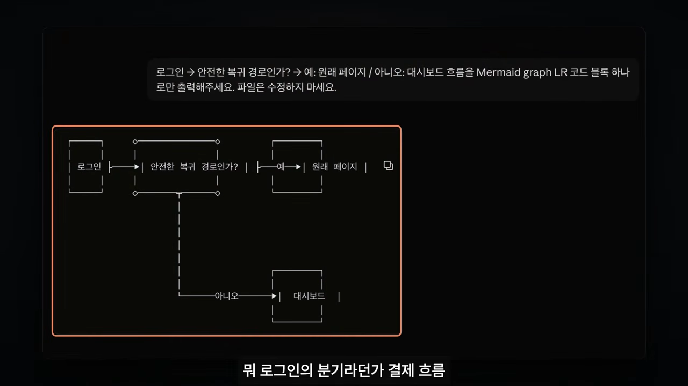
사례 6~10: 기다림·언어·보안·상태
나머지 다섯 개는 기다리는 시간, 언어, 보안, 상태 확인처럼 Claude Code를 쓰는 경험 자체를 바꾸는 사례예요.
6. 게임
이런 기능이 나오면 꼭 게임을 붙이는 사람이 있다고 해요. 응답을 기다리는 동안 게임을 하며 시간을 보내는 용도예요.
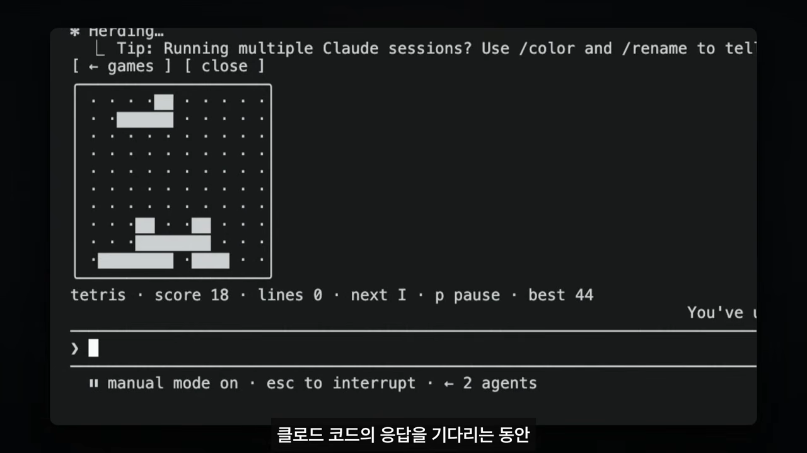
7. 한국어 UI
터미널의 명령어 설명과 설정 항목을 한국어로 바꿔요. 다른 언어도 마찬가지예요. Claude Code가 원래 그리는 UI에도 이렇게 손을 댈 수 있다는 예시예요.
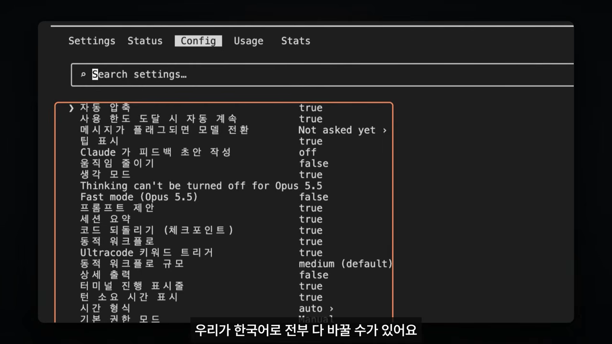
8. 특정 문자 가리기
앞에서 본 이메일 가림을 넓힌 사례예요. 촬영 중이거나 화면을 공유할 때, 이메일 주소나 Base64로 인코딩한 값, JWT 같은 값을 가려 둘 수 있어요. 필요할 때만 버튼을 눌러 확인해요.
9. 컨텍스트 사용량
입력창 위에 지금 컨텍스트를 얼마나 썼는지, 최근 턴에서 얼마나 늘었는지 보여 줘요. 파일을 읽거나 작업을 이어갈 때 사용량이 늘어나는 걸 한눈에 볼 수 있어요.
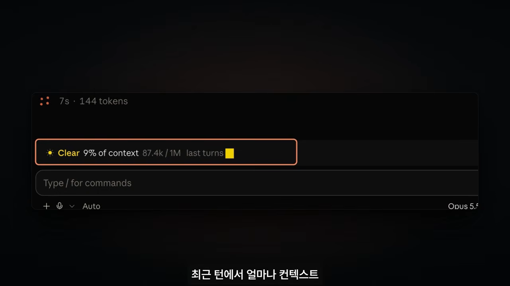
$.session.usage()로 읽어요. 영상 07:04에서 보기10. 에이전트 관제
현재 세션에서 돌고 있는 에이전트들을 옆 패널에 모아 보여 줘요. 하나씩 눌러 대화와 도구 사용 내역, 어떤 작업을 마쳤는지 확인할 수 있어요. 발표자는 다이나믹 워크플로처럼 에이전트를 여럿 돌릴 때 특히 쓸모 있다고 봐요.
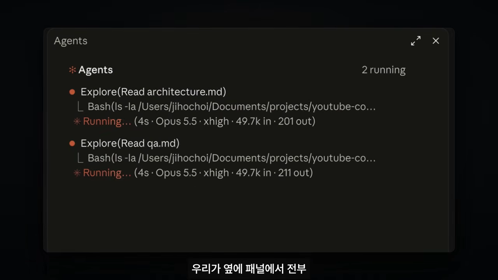
열 가지를 한 표로
영상 화면에 보인 위치와 코드를 기준으로 묶으면 이래요. 코드가 화면에 나오지 않은 사례는 비워 뒀어요.
| 사례 | 어디에 그리나요 | 화면에 보인 코드 |
|---|---|---|
| PR 상태 | 입력창 위 | ui.render + AbovePrompt |
| Linear 연결 | 터미널 안 선택 창 | — |
| 문단 수정 | 옆 패널 | Pane, $.prompt.submit |
| 브라우저 | 옆 패널 | browser.open, Pane |
| 다이어그램 | 응답 안 | ui.render + AssistantMessage |
| 게임 | 대기 표시 아래 | — |
| 한국어 UI | 설정·명령어 화면 | — |
| 문자 가림 | 응답 안 + 입력창 위 버튼 | AssistantMessage, AbovePrompt |
| 컨텍스트 사용량 | 입력창 위 | AbovePrompt, $.session.usage() |
| 에이전트 관제 | 옆 패널 | agent.spawn, Pane |
내 모드 직접 만들기
이제 떠올려 둔 기능을 직접 모드로 만들어 볼 차례예요. 코드를 직접 쓸 필요는 없어요. 예를 들어 '입력창 위에 현재 Git 브랜치를 보여 주는 모드를 만들어 줘'라고 말하면 Claude가 알아서 만들어 줘요.
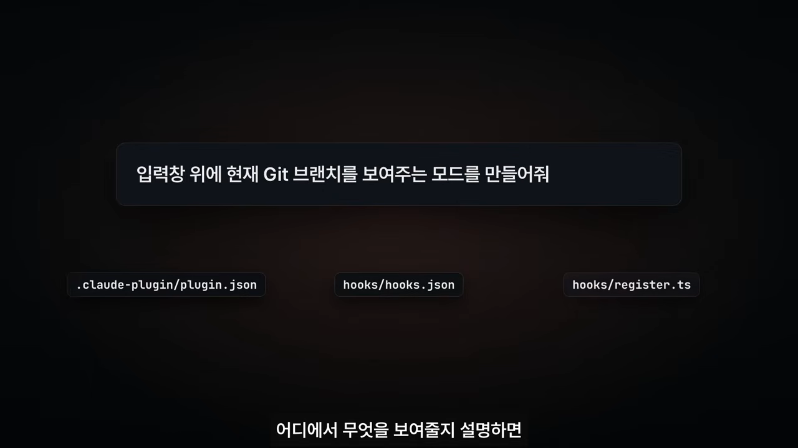
그러니 중요한 건 어디에 무엇을 보여 줄 수 있는지 아는 거예요. 화면의 자리 이름만 알아도 요청이 훨씬 정확해져요.
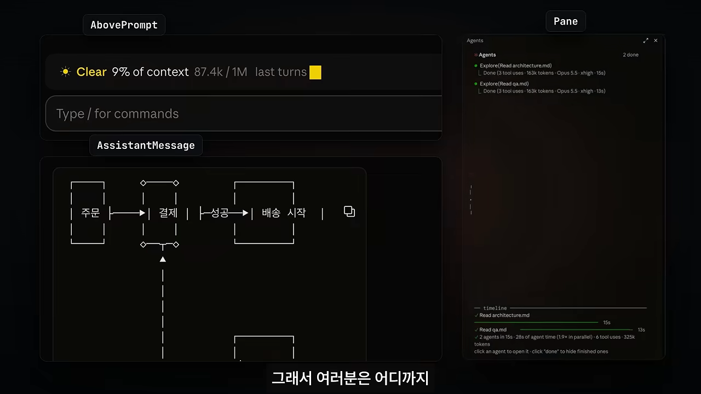
AbovePrompt, 응답은 AssistantMessage, 옆 패널은 Pane이에요. 영상 07:52에서 보기모드는 플러그인처럼 설치되기 때문에 배포하거나 다른 사람과 나눌 수도 있어요. 발표자는 평소 따로 확인하던 정보나 반복해서 치던 요청부터 모드로 옮겨 보라고 권해요. 그 정보를 늘 띄워 두거나 자주 누르는 버튼을 Claude Code 바로 위에 두면 작업 효율이 올라가요.